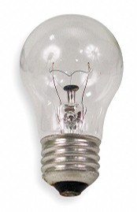

📝 Contrôle continu 2
- Date début: mardi 26 octobre 2021
- Date limite pour rendre: mercredi 10 novembre 2021 Ã 23h59
- A rendre sur Moodle: soumettre uniquement votre unique fichier .py, dans l'onglet évaluations du cours d'algo. et prog. 2 en Python.
- Retard possible: non.
C'est un exercice à faire SEUL(E), la triche sera activement recherchée et sanctionnée par un zéro à toutes les copies identiques même si seuls certains morceaux de code sont identiques.
Ce CC va permettre d'évaluer vos connaissances spécifiquement dans les notions de base en programmation objet en Python, avec un peu de calcul également. Vous allez écrire 2 classes qui permettent de représenter des ampoules électriques, et des réfrigérateurs.

Voici ce qui doit être strictement respecté comme demandé dans les consignes (sinon les points ne seront pas comptés):
Vous devez créer 2 classes:
- Une classe
Ampoule, qui a 3 méthodes (constructeur inclus) - Une classe
Réfrigérateur, qui a 17 méthodes (constructeur inclus)
Le tout dans UN SEUL module (un seul fichier .py):
- le nom que vous donnez à vos classes et à chaque méthode doivent être EXACTEMENT ceux demandés, au caractère prêt: majuscule/minuscule, accents ou pas.
- le nombre et l'ordre des paramètres pour chaque méthode doivent être EXACTEMENT comme demandés
- la valeur de retour de chaque méthode doit respecter ce qui est demandé
- en règle générale tenez-vous en uniquement à ce qui est demandé, ni plus ni moins. Vous serez noté sur le respect scrupuleux du "contrat" de chaque méthode (nom, params, actions, et valeurs de retour)
- aucun code en dehors des classes n'est demandé
Et voici là où vous êtes libres de faire comme vous voulez:
- le nom du module (fichier .py) n'importe pas
- l'ordre des méthodes n'importe pas
- le nom de chaque paramètre des méthodes n'importe pas
- comment chaque méthode fait ce qu'elle doit n'importe pas, tant qu'elle le fait correctement
Les classes et méthodes sont demandées dans aucun ordre particulier, donc faites-les dans l'ordre que vous préférez, même si certaines dépendent d'autres.
Voici les points sur lesquels vous serez évalués:
Classe Ampoule
Une ampoule peut potentiellement briller un certain nombre d'heures au maximum (en cumulé, pas forcément en une seule fois), et ce
nombre maximum est spécifié comme premier et unique paramètre du constructeur (types float ou int) (point
1).
Une ampoule a une méthode briller_pendant_durée qui lui permet de briller pendant un certain nombre de secondes
spécifié en unique paramètre (types float ou int).
- Si elle a pu briller une certaine durée (une certaine fraction d'heures) car elle n'avait pas dépassé son nombre maximal d'heures, alors cette
méthode retourne la durée (en heures, types
floatouint) qu'elle a pu briller lors de l'appel de cette fonction (pas en cumulé) (point 2), sachant que jamais une ampoule ne peut briller plus que son maximum d'heures de vie. - Si elle n'as pas pu briller du tout car elle avait déjà atteint son maximum d'heures avant l'appel de la méthode, la méthode retourne 0 (point 3).
Pour savoir combien de temps à briller il reste à une ampoule, créer la méthode avoir_heures_restantes, qui ne prend aucun paramètre, et
qui retourne le nombre d'heures de "vie" qu'il reste à l'ampoule (type float). (points 2 et 3)
Classe Réfrigérateur
Constructeur
Le constructeur (point 4) prend 4 paramètres dans cet ordre:
- le volume intérieur du réfrigérateur, en litres (types
floatouint) - la vitesse de refroidissement des aliments à l'intérieur du réfrigrateur quand celui-ci est fermé et allumé.
L'unité est expliquée ci-dessous (types
floatouint) - la vitesse de réchauffement des aliments à l'intérieur du réfrigrateur quand celui-ci est fermé mais éteint.
L'unité est expliquée ci-dessous (types
floatouint) - le thermostat, c'est à dire la température visée, en degrés celsius (types
floatouint)
Unité de vitesse de variation de température
Une partie de votre travail consiste à comprendre l'unité de la vitesse de variation de température, afin de pouvoir faire les calculs adequats plus
tard, dans les méthodes de la classe Réfrigérateur.
Pour mesurer une vitesse à laquelle les aliments changent de température, on va utiliser une unité qui dépend:
- du poids de l'aliment, en kilogrammes
- de la variation de la température, en degrés celsius
- du temps pendant lequel la variation se déroule, en heures
Plus un aliment est lourd (pour une même durée et variation de température) plus il met de temps à changer de température, donc le poids ralenti la vitesse de variation de la température. Plus la variation de température est élevée (pour un même poids et même durée), plus la vitesse de variation est élevée. Et enfin plus le temps accordé au changement de température est elevé (pour une même variation et même poids), plus la variation sera importante.
Exemples pour une vitesse de réchauffement de 10:
- 1kg d'aliment monte de 10 degrés celsius en 1 heure
- 500g d'aliment montent de 20 degrés en 1 heure
- 2kg d'aliment montent de 5 degrés en 1 heure
- 1kg d'aliment monte de 5 degrés celsius en 30 minutes
- 1kg d'aliment monte de 20 degrés celsius en 2 heures
- 2kg d'aliment montent de 10 degrés celsius en 2 heures
La température baisse si on parle de vitesse de refroidissement, dans ce cas la vitesse est négative (par exemple -10 au lieu de 10).
Méthodes
Branchement sur prise électrique (point 5)
Un réfrigérateur peut être branché sur une prise électrique ou non. Initialement un réfrigérateur doit être débranché. Créer 3 méthodes:
brancher, sans paramètre, sans résultat, qui branche le réfrigérateurdébrancher, sans paramètre, sans résultat, qui débranche le réfrigérateurest_branché, sans paramètre, qui retourne unbool, vrai si le réfrigérateur est branché, faux sinon
Porte (point 6)
La porte d'un réfrigérateur peut être ouverte ou fermée. Initialement la porte doit être fermée. Créer 3 méthodes:
ouvrir_porte, sans paramètre, sans résultat, qui ouvre le réfrigérateurfermer_porte, sans paramètre, sans résultat, qui ferme le réfrigérateurporte_est_fermée, sans paramètre, qui retourne unbool, vrai si le réfrigérateur est fermé, faux sinon
Thermostat (point 7)
Le thermostat d'un réfrigérateur peut être obtenu ou changé. Créer 2 méthodes:
définir_thermostat, sans résultat, qui prend un paramètre (typefloat) qui doit être le nouveau thermostat en degrés celsius, c'est à dire la nouvelle température à atteindre à l'intérieur du réfrigérateur.avoir_thermostat, sans paramètre, qui retourne la valeur du thermostat en degrés celsius (typefloat)
Ampoule (point 8)
Un réfrigérateur a une apoule pour éclairer son intérieur lorsque la porte est ouverte. Initialement un réfrigérateur n'a pas d'ampoule installée. L'ampoule d'un réfrigérateur peut être obtenue ou changée. Créer 2 méthodes:
changer_ampoule, sans résultat, qui prend un paramètre (typeAmpoule) qui doit être la nouvelle ampoule du réfrigérateur.avoir_ampoule, sans paramètre, qui retourne l'ampoule actuellement utilisée dans le réfrigérateur (typeAmpoule)
Ajout d'aliments (points 9, 10, 11, 12, 16)
Créer une méthode ajouter_aliment. Elle prend 4 paramètres dans cet ordre:
- Le nom de l'aliment à ajouter (type
str) - Le volume (en litres) de l'aliment à ajouter (types
floatouint) - La température (en degrés celsius) de l'aliment au moment de l'ajout (types
floatouint) - Le poids (en kilogrammes) de l'aliment (types
floatouint)
La méthode retourne:
- (point 9) le
int1 si la porte est fermée, dans ce cas l'ajout n'est pas fait - (points 10 et 16) le
int0 si l'ajout a pu se faire sans problèmes - (point 11) le
int3 si un aliment déjà dans le réfrigérateur a le même nom que le nouvel aliment, dans ce cas l'ajout n'est pas fait - (point 12) le
int2 s'il n'y a plus de place dans le réfrigérateur car l'aliment ajouté est trop volumineux par rapport à l'espace disponible restant à l'intérieur, dans ce cas l'ajout n'est pas fait
Retrait d'aliments (points 13, 14, 15, 17)
Créer une méthode retirer_aliment. Elle prend 1 paramètre qui est le nom (type str) de l'aliment à retirer de l'intérieur
du réfrigérateur.
La méthode retourne:
- (point 13) le
int1 si la porte est fermée, dans ce cas le retrait n'est pas fait - (point 15) le
int2 si l'aliment spécifié n'existe pas dans le réfrigérateur - (points 17 et 14) le
int0 si le retrait a pu se faire sans problème
Avoir la liste des aliments (points 16, 17)
Créer une méthode avoir_liste_aliments, qui ne prend aucun paramètre.
Elle retourne une liste (type list) de tuples (type tuple), un tuple par aliment. Chaque tuple contient 4 éléments dans cet
ordre:
- le nom de l'aliment (type
str) - le volume de l'aliment, en litres (types
intoufloat) - la température de l'aliment au moment du retrait, en degrés celsius (types
intoufloat) - le poids de l'aliment, en kilogrammes (types
intoufloat)
Avoir le volume total des aliments (point 18)
Créer une méthode avoir_volume_total_occupé. Elle ne prend aucun paramètre, et retourne le volume (en litres, types int ou
float) cumulé de tous les aliments à l'intérieur du réfrigérateur.
Avoir la température moyenne pondérée des aliments (points 19, 20)
Créer une méthode avoir_température_moyenne_aliments. Elle ne prend aucun paramètre, et retourne la températures (en degrés celsius,
types int ou float) de tous les aliments à l'intérieur du réfrigérateur. La moyenne doit être pondérée par le poids de
chaque aliment
Passer le temps (points 21 Ã 27)
Créer une méthode passer_temps. Elle ne retourne aucun résultat. Elle prend 2 paramètres dans cet ordre:
- La durée en secondes à faire passer (types
floatouint) - La température ambiante extérieure en degrés celsius (types
floatouint)
La méthode doit calculer la nouvelle température de chaque aliment, et le cas échéant faire briller l'ampoule. Cela dépend de plusieurs facteurs:
- (point 21) si la porte du réfrigérateur est fermée et celui-ci est branché, il faut refroidir chaque aliment selon la puissance de refroidissement. (point 22) Un aliment ne peut être refroidi plus bas que la température minimale visée par le réfrigérateur.
- (point 23) si la porte du réfrigérateur est fermée mais celui-ci est débranché, il faut réchauffer chaque aliment selon la vitesse de réchauffement spécifiée comme paramètre du constructeur. (point 24) Un aliment ne peut être réchauffé plus que la température ambiante extérieure.
- (point 25) si la porte du réfrigérateur est ouverte, que celui-ci soit branché ou pas, il faut réchauffer chaque aliment selon une vitesse de réchauffement fixe de 6 (voir plus haut pour l'unité), qui est ce qu'on considère être la vitesse de variation de température de l'air extérieur. (point 26) Un aliment ne peut être réchauffé au-delà de la température ambiante extérieure.
- (point 27) si la porte du réfrigérateur est ouverte, et si celui-ci est branché, l'ampoule doit briller lorsque le temps passe.
Pour rester simple dans les calculs, on ne considère que les cas où les aliments sont plus chauds que l'intérieur du frigo quand ils doivent être refroidis, et plus frais que l'air extérieur quand ils doivent être réchauffés.